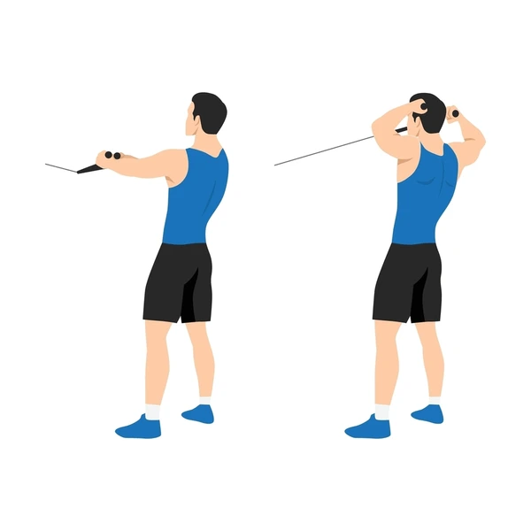

Exercise Description
Attach a rope to a high cable pulley. Stand facing the machine and grasp the rope with both hands. Pull the rope towards your face, elbows flared out, then slowly return to the starting position.
Reps and Sets
Beginners: 3 sets of 12-15 reps
Weights: 15-20kg
Rest time between each set: 45secs
Video Implementation